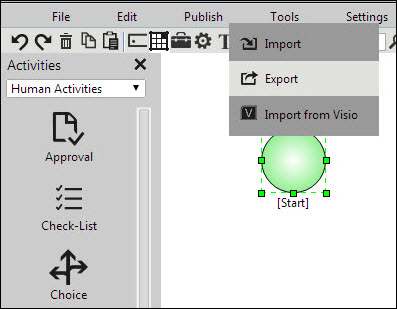
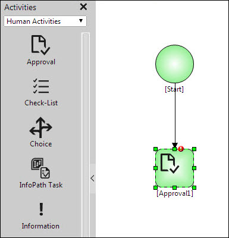

No
The Process Designer provides an interface to design the workflow processes. Workflows can be designed and deployed using the Process Designer.
To add Process Designer control using a panel:
Before adding the Process Designer control in a panel, create an ASP.NET project in Visual Studio .NET 2012. You must add two .aspx pages for this control, one to embed the control and other to create the list definitions and call the Designer.aspx page.
string applicationName = " ApplicationName ";
string listName = "Workflow";
string workflowName = "WorkflowName"; // Use unpublished workflow Name
Skelta.Core.ApplicationObject application = new Skelta.Core.ApplicationObject(applicationName);
// Create User context as given in this topic http://sun.skelta.com/DeveloperGuide/CreatingUserContext.html
Skelta.Entity.UserContext usrcn = new Skelta.Entity.UserContext("47D5EA43-B471-492C-A2C3-41DC41C15EC8", application, "skeltalist", "", "", false);
Skelta.Repository.Web.List.ListPageParameters param = new Skelta.Repository.Web.List.ListPageParameters(); param.ListName = listName;
Skelta.Repository.List.ListDefinition list = Skelta.Repository.List.ListDefinition.GetList(application, listName);
param.ListId = list.Id;
Skelta.Repository.List.ListDataHandler ldh = new Skelta.Repository.List.ListDataHandler(applicationName, listName);
param.ListItemId = ldh.GetListItemId(workflowName);
param.ApplicationName = applicationName;
//specify the version information //param.VersionStamp = "1";
param.LoggedInUserId = usrcn.LoggedInUserId;
string encParam = param.GetSecuredUri();
//Give the page name where the Process Designer control is placed.
string url = "Designer.aspx"; // specify the page where ProcessDesigner is embedded
if (url.IndexOf("?") > 0)
url += "&" + encParam;
else
url += "?" + encParam; this.Context.Response.Redirect(url);
string applicationName = "Telematics Repository";
Skelta.Core.ApplicationObject application = new Skelta.Core.ApplicationObject (applicationName);
Skelta.Entity.UserContext usrcn = new Skelta.Entity.UserContext ("81734457-B3DB-4BC9-894A-C3149828C65C", application, "skeltalist", "", "", false);
Workflow.NET.Web.Designer.ProcessDesigner pd = new Workflow.NET.Web.Designer.ProcessDesigner();
pd.ApplicationName = usrcn.Repository.ApplicationName; //Provide Application or Repository name. This is mandatory.
pd.WorkflowName = "Test Workflow"; //Provide Workflow name. This is mandatory.
pd.UserIdString = usrcn.LoggedInUserId; //Provide user id string. This is mandatory.
pd.ID = "ProcessDesigner"; // This is mandatory.
pd.Height = Unit.Percentage (100);
Panel1.Controls.Add (pd);
Properties that can be set for Process Designer Control are:


Using Process Designer as an Embedded Control in Custom Applications.
Consider a scenario where a user creates a custom application and uses the Process Designer control as an embedded control. In such a scenario, the user will have to follow the steps given below in order to publish/execute the workflow.
protected void Button _Click(object sender, EventArgs e)
{
string applicationName = " ApplicationName ";
string listName = "Workflow";
string workflowName = "WorkflowName";
Skelta.Core.ApplicationObject application = new Skelta.Core.ApplicationObject(applicationName);
// Create User context as given in this topic http://sun.skelta.com/DeveloperGuide/CreatingUserContext.html
Skelta.Entity.UserContext usrcn = new Skelta.Entity.UserContext("47D5EA43-B471-492C-A2C3-41DC41C15EC8", application, "skeltalist", "", "", false);
Skelta.Repository.Web.List.ListPageParameters param = new Skelta.Repository.Web.List.ListPageParameters();
param.ListName = listName;
Skelta.Repository.List.ListDefinition list = Skelta.Repository.List.ListDefinition.GetList(application, listName);
param.ListId = list.Id;
Skelta.Repository.List.ListDataHandler ldh = new Skelta.Repository.List.ListDataHandler(applicationName, listName);
param.ListItemId = ldh.GetListItemId(workflowName);
param.ApplicationName = applicationName;
//specify the version information
//param.VersionStamp = "1";
param.LoggedInUserId = usrcn.LoggedInUserId;
string encParam = param.GetSecuredUri();
//Give the page name where the Process Designer control is placed.
string url = "PDesigner.aspx"; // specify the page where ProcessDesigner is embedded
if (url.IndexOf("?") > 0)
url += "&" + encParam;
else
url += "?" + encParam;
this.Context.Response.Redirect(url);
}